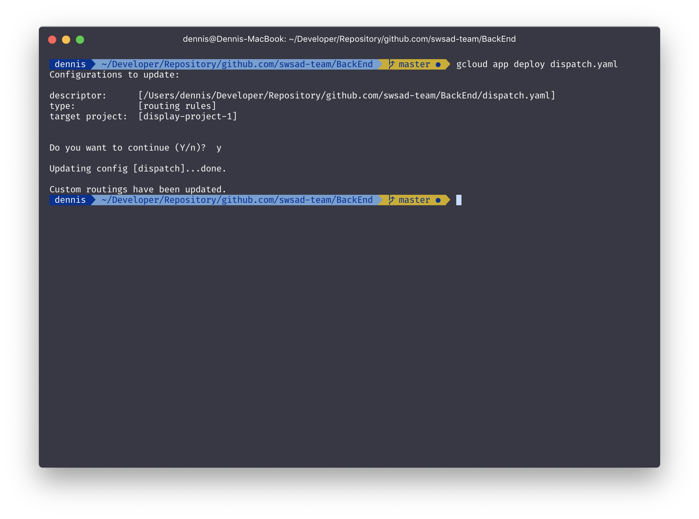

简介
Google App Engine
Google App Engine 是 Google Cloud Platform 上的一个全托管的 Serverless 应用。相对于 Google Compute Engine 所提供的高性能虚拟机服务，使用 GAE 可以使开发者专注于应用开发，而不需关注与应用运行环境相关的配置、运维等工作。GAE 目前提供了多种语言的环境，包括 Go、PHP、Node.js、Java 等，同时也提供了标准环境以及柔性环境以应对不同的扩容策略。本文中将使用 GAE 的 柔性环境搭建 Node.js 的 Web 应用。
项目结构
本次用于部署的项目是前后端分离的 Web 应用。前端使用的是 React，后端部分使用了 Express + MongoDB。MongDB 部分直接使用了 MongoDB Atlas 的免费集群，虽然有一定的限制但是作为简单的项目来说足够了。由于本文重点不在于搭建 Web 应用故不会详细解释项目具体实现。
部署至 GAE
要使用 Google App Engine 首先需要注册 Google Cloud Platform 账户，在使用 GCP 服务时会根据产生的流量以及实例运行时间产生相应费用。GCP 有提供有效期一年的 300 USD 赠金，使用信用卡注册账户后可以自动获得（会产生相应税费）。
准备工作
安装 Cloud SDK
首先要先在开发机器上安装 Cloud SDK，可以在此处看到不同平台的安装文档。本文以 macOS 10.14 作为示例。
# 下载
curl -O https://dl.google.com/dl/cloudsdk/channels/rapid/downloads/google-cloud-sdk-245.0.0-darwin-x86_64.tar.gz
# 解压
tar zxvf ./google-cloud-sdk-245.0.0-darwin-x86_64.tar.gz
# 安装
cd google-cloud-sdk
chmod 755 ./install.sh
./install.sh
# 重新加载 shell
source ~/.zshrc
至此 Cloud SDK 就已经成功安装了！其后在正式运行和部署之前我们还需要新建项目并进行一些配置。
建立项目
首先使用 Cloud SDK 在 shell 中登录 GCP 账户，SDK 会通过 Web 界面鉴权。
// 登录
gcloud auth login
成功登录后就可以开始创建新的项目了。
# 创建项目并设置为默认项目
gcloud projects create [YOUR_PROJECT_NAME] --set-as-default
# 显示项目详情
gcloud projects describe [YOUR_PROJECT_NAME]
# 在项目中新建 App Engine 应用
gcloud app create --project=[YOUR_PROJECT_NAME]
这里要选择 App Engine 部署的区域，此处我们选择 [1] (香港)。具体区域信息可以在这里Google Cloud 区域和地区文档 查看。
然后要在 Web 端的控制台为对应项目开启结算，链接为启用结算。
这样就完成了项目的初始化，可以开始将我们的程序部署至 App Engine 了
App Engine 支持同一 App 包含多个 Service。在本项目中有前端以及 API 服务器两个 Service。
api-server 服务
app.yaml
要将应用部署至 GAE，首先配置 app.yaml 文件。
该配置文件中可以配置关于 GAE App 的很多属性，包括网络、资源、实例自检、扩容策略以及环境变量等。具体的配置方法可以在 app.yaml 配置文件文档中查看。服务将会用到runtime、service 以及 env_variables 三个属性。
runtime：应用的运行环境，如nodejs<version>、python<version>、php<version>等；service：服务的名称；env_variables：环境变量。
在 api-server 中我将使用 Node.js LTS 版本即 nodejs10，环境变量我需要用于生成 JWT Token 的密钥 JWT_TOKEN 以及用于连接数据库等 MONGO_DB_URL。
配置实例如下：
runtime: nodejs10
service: api-server
env_variables:
JWT_KEY: [JWT_KEY]
MONGO_DB_URL: [DATABASE_URL]
package.json
完成之后我们需要检查 package.json 中的 start 脚本。在应用被部署至 GAE 后，将会自动安装所有所有依赖（不包含 devDependencies），并运行 start 脚本。同时 GAE 不能正常运行如 babel-node 以及 nodemon 等程序，所以我们要确保 start 脚本中的内容是通过 node 启动，即内容为 node [APP_ENTRY]。
.gcloudignore
在部署应用至 GAE 时，为了避免传输大量文件，我们要将不需要用到的文件以及 node_modules 目录加入至 .gcloudignore 文件
部署
至此我们可以开始将应用部署至 GAE。
# 在应用根目录下运行
gcloud app deploy
可以看到我们需要先部署一个 default 的服务才能部署其他服务。此处可以自由选择任意服务进行部署，只需移除 app.yaml 中 service 一项既可以部署为 default。此处我先将 api-server 服务设为 default 后重新运行部署命令即可成功部署。
front-end 服务
本次前端项目是通过 create-react-app 构建的，其可以构建打包出静态文件。我们需要为构建出来的前端静态文件配置路由，除此之外其他配置基本与 api-server 部分相同。
app.yaml
由于静态资源文件不需要特定运行环境，所以可以自由选择。在示例中我们继续使用 nodejs10。除此之外路由部分也要在该文件中定义。定义路由时我们使用 handlers 属性。handlers 属性可以配置匹配到对应请求时对行为，具体文档请参考文档handlers 元素。
前端资源目录如下：
build
├── index.html
├── favicon.ico
└── static
├── js
└── css
我们需要对请求 <domain>/ 返回 build/index.html、对 <domain>/favicon.ico 返回 build/favicon.ico 、<domain>/static/* 返回 static/*。同时前端作为单页应用也要对其他路由返回 index.html 以防止刷新时返回 404 Not Found。
url 字段使用正则表达式对请求路径进行匹配；static_files 字段是对应的文件，需要与 upload 同时使用；static_dir 则是路径对应的目录。
配置完成后的 app.yaml 文件如下：
runtime: nodejs10
service: front-end
handlers:
- url: /
static_files: build/index.html
upload: build/index.html
- url: /static
static_dir: build/static
- url: /[^/]\.[^/]*$
static_dir: build
- url: /.*
static_files: build/index.html
upload: build/index.html
部署
配置完 app.yaml 以及 .gcloudignore 后就可以开始部署了，部署流程同 api-server。
服务管理
接下来我们需要将不同请求转发给不同 Service 去处理。项目服务如下：
App
├── front-end (<domain>/*)
└── api-server (<domain>/api/*)
要将不同的请求转发至不同 Service，可以为项目配置 dispatch.yaml 文件。该文件包含两种元素：url 以及 service。关于该文件的详细配置可以参考文档 dispatch.yaml 配置文件。
配置示例如下：
dispatch:
- url: '*/api/*'
service: api-server
- url: 'display-project-1.appspot.com/*'
service: front-end
配置完成后将路由文件部署至 GAE，此时要注意配置文件中用到的 Service 都必须提前部署至 GAE。
gcloud app deploy dispatch.yaml

然后我们就可以在 GAE 的控制台页面看到各个服务以及对应的路由。
至此前后端两个服务以及路由都已经配置完毕了，访问项目分配的域名 [YOUR_PROJECT_ID].appspot.com 就可以进入 Web 应用。
调试
当然实际开发过程中不可能那么顺利，在我们将应用部署至 GAE 后，有可能会遇到应用没有正常工作的情况。这个时候我们没办法像在开发机器或者虚拟机实例上那样使用各种手段进行调试。GAE 提供了一些途径供我们了解程序运行状况。
Stackdriver 日志
从 Stackdriver 日志页面可以看到程序运行时的各种输出，可以观察到对请求的处理以及各种程序中的各种 log。
Stackdriver 错误报告
在 Stackdriver 错误报告页面可以看到服务运行时所产生的所有错误及其堆栈，并可以设置错误的状态以及配置程序自动重新加载。
Stackdriver 调试
在 Stackdriver 调试页面中可以对当前部署的代码进行快照。
其他问题
成员权限问题
在写这篇文章的时候我又重新新建了一个 project 进行部署，在初次 deploy 时遇到了如下权限错误。
时候通过在 IAM 页面删除无权限的成员，然后在重新为其添加 Cloud Build 服务账号角色解决了这个问题。
总结
应该说 Google App Engine 提供了一个很好的应用部署方案，对于小型应用来说这种无服务器的配置可以减少运维以及部署的各种成本。而在应用需要进行扩容或者迭代更新时，GCP 提供的完整解决方案可以让开发者无缝迭代，也可以逐渐加入其他组件如 Google Cloud Storage，Firebase 等其他 Google 提供的云服务，直至迁移至 Kubernetes。我觉得 GAE 和通过 Docker 进行部署相比起来开发人员要配置的部分更少了，只需要通过简单的步骤就可以将应用部署至生产环境。
后记
这篇文章是在前两天搞定 GAE 以及 Travis CI 的部署之后决定写的。本以为写文章的时候可以很快复现上次的成果，没想到又遇到了一大堆坑。实际上我不太会写文章，每次写的时候不是没东西可写就是感觉像在记流水账，不过这次大概是因为内容很多所以边写边在配置感觉还挺好玩的。其实本来打算一篇文章写完 GAE 和 Travis CI 的结果写不完，下次再来写 Travis CI 和 GAE 的 持续部署好了。或许以后还会用用看 Google Cloud Functions，全面拥抱 Serverless。